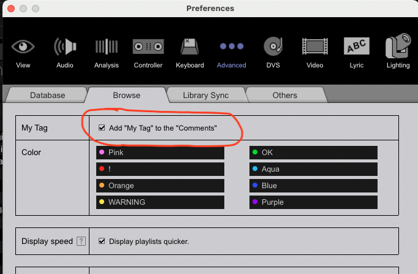
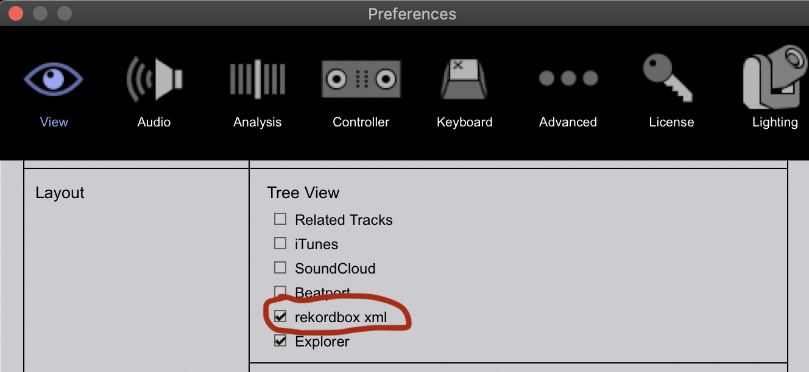

Setup
Python
The DJ Tools library uses f-strings and the asyncio API so a minimum version of Python 3.6 is required. As always, when working with a Python project, you're going to want to create a virtual environment; Pyenv is really nice but if you insist on doing a system-wide Python installation then proceed with the following instructions:
- Mac installation:
brew install python@3.6 - Linux installation:
sudo apt install python3.6 - Windows installation: Windows releases or 3.6.0 installer
Note that, at the time of writing, Python versions up through 3.7 have reached end-of-life...best to use at least Python 3.8.
DJ Tools
- Run
pip install "djtools[accelerated]"to install the DJ Tools library- To install DJ Tools without the accelerated computation for Levenshtein distance (might be difficult to install the binaries for non-technical users), run
pip install djtools - You can install the pre-release version with
pip install djtools --pre - If you want to restrict the version being installed to not include, say, the next minor version's beta release then you can do so like
pip install djtools<2.5.0 --pre - Note that installing with the
--preflag will also install pre-release versions for all dependencies which may cause breakage, in that case you can target specific pre-release versions like thispip install djtools==2.4.1-b9
- To install DJ Tools without the accelerated computation for Levenshtein distance (might be difficult to install the binaries for non-technical users), run
- Confirm your installation works by running
djtools - [Optional] link the
configsdirectory of the installation to a user-friendly location for easy editing of your config files:djtools --link-configs path/to/new/location/ - Edit your configuration files to support your usage needs (see here for more details)
AWS S3 API compliant object store
If you are using any of the following features, you are required to have an AWS S3 API compliant cloud storage account setup (see this guide for more details):
- Sync files with the Beatcloud
- Sync tracks from Spotify playlists
- Check the Beatcloud for tracks in Spotify playlists or local directories
Spotify user account
If you are using any of the following features, you are required to have a Spotify account to add playlists to:
Spotify and Reddit APIs
If you are using any of the following features, you are required to have a registered Spotify API application (see this guide for more details):
- Create Spotify playlists from other users' uploads
- Sync tracks from Spotify playlists
- Check the Beatcloud for tracks in Spotify playlists or local directories (if Spotify playlists are configured)
Additionally, if you're using any of the following features, you are required to have a registered Reddit API application (see this guide for more details):
Discord webhook
If you are using any of the following features, you are required to have a Discord server with a registered webhook integration (see this guide for more details):
- Create Spotify playlists from other users' uploads
- Sync files with the Beatcloud
NOTE: this isn't strictly required but:- Create Spotify playlists from other users' uploads isn't possible without it
- It's really useful to automatically notify other users when and what tracks are uploaded
FFmpeg
If you're using any of the features which leverage the pydub package (NORMALIZE_AUDIO, PROCESS_RECORDING, etc.), and you're exporting in any format other than wav or raw, you'll need to install FFmpeg to support those codecs. For more info about installing FFmpeg, you can look at the note about it on the pydub README.
Rekordbox settings
Writing "My Tag" data to the Comments field
In order for "My Tag" data to be accessible to the Build Playlists From Tags and Combine Playlists With Boolean Algebra features, that data must be written to the Comments field. There's no need to clear pre-existing data from the Comments; just ensure that this option is checked in the settings:

Importing tracks from XML
Make sure you have made the rekordbox.xml database visible under Preferences > View > Layout:

Also ensure you have the proper XML file (whichever XML has data you're wanting to import) selected under Preferences > Advanced > Database > rekordbox xml: